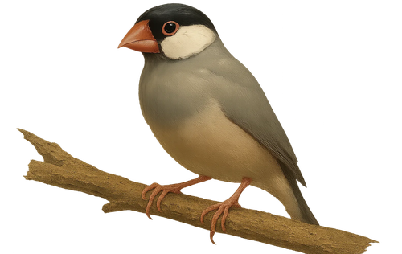

Hello World！
さらに充実した、
プログラミングライフへ

1. このサイトについて
このサイトは、自身のWeb開発能力やプログラミング技術の向上、ブログで自分の考えを文字に起こす事で頭の整理に繋がることや
最終的にこちらのサイトを成果物として残せると思い、できる限りの効率を考え作成いたしました。
未経験から作成を始めたので、情報量や文章内容が浅いかもしれませんがご了承ください！！
これからプログラミング学習を始める人や初学者が、少しでも学習マインドの参考にしていただけたらと思います！！
2. プログラミングの目的
結論として、「プログラミングを仕事にする」が目的です！
とはいえ就職や転職前の面接があると思うので、対策として自分の考えをまとめて具体的な目的や目標は決めておきましょう。
普段使用しているWebサービスやスマホアプリを意識してみるといいかもしれません!これら全てがプログラミングから作られます！
僕自身、人間社会が続く限り技術進歩はつきもので、そこにプログラムが存在するので今後の市場価値も高いです。
まず前提としてプログラミングとは何かをイメージする必要があります。
それを知るためにまずは、簡単にプログラミングをイメージするための学習ツールProgateをおすすめします!
Web開発は今後も需要があるため、まずはフロントエンド開発(Webサイトのデザインなど)に必要なHTML/CSS・JavaScriptコースがおすすめだと思います!
学習始めに、Progateで軽くプログラミングのイメージを把握すると、後の学習にも活かせます!
3. なぜプログラマー？
手間のかかる作業（めんどくさいと思う事）をツール化するのは技術の進歩に欠かせないことで、これらは主にプログラマーを含むエンジニアの仕事です。
今手にしているパソコンやスマホ、その中で扱うサービス全てが技術進歩の集大成ですから！
もちろん、プログラマーとして就職や転職後も学習を継続していくのは絶対に大事です！！最新の技術やトレンドの把握のためでもあり、
基本チーム開発がベースになると思いますので
4. 学習手順
1. なぜプログラマーなのか、その目的をある程度明確に！
2. パソコンの基本的な操作
タイピングやフォルダ・ファイル操作など
GoogleのChromeを使いこなせると便利!
3. プログラミングの学習ツールや開発環境を知る
学習ツール： Progate、 ドットインストール、 Udemy など
生成AIの Chat-GPT を活用する事例も増えています。
開発環境：
VSCode…プログラムを書くツール（エディター）
GitHub…Gitでプログラムをネット上に保存してGUIで管理できるWebサービス(Git＋多機能)
※ Gitとは簡単にファイル内容の変更管理などを、主にコマンドで操作するツール
※ GitHubはチーム開発に欠かせないツールです。ソースコードの共有やレービュー機能(コード確認・指摘)など
※他にも使用するプログラミング言語やWebサービスに合わせて、各自で開発環境を追加していく必要がある。
4. まず作りたいシンプルなWebサービス（デザインなど）を考えプログラミングで作る
興味関心のあるWebサイトやサービスを参考にしてみるのもアリです！
※重要：あまり凝ったデザインや技術スタックの多いWebサービスは避ける。技術力の高さや情報量の多さから、学習時間も増えて挫折に繋がります！
補足：情報を自分で調べて整理する力を身につけることも大事だと思います。
このブログサイトの作成を始めた時点では、ろくにHTML/CSSは書けず、もちろんJavaScriptやPHPなど使用したプログラミングはほぼ不可能でした。 ですが学習ツールやWebサービスを使いこなすことで、学習環境の改善や知識・経験不足を補い、より早くプログラミング技能を身につけることができると思いました!
上記の手順が必ずしも正しいとは限らないので、自分に合った学習方法で効率よく進めてください。
5. まとめ
こちらや他のWebサイトも参考にしつつ、日々学習を進めていく中であまり深く考えこまず、息抜きも挟みながらゲームクリアの感覚でプログラミングを楽しんでください！
この作品を制作していく中で、プログラミング以外のことも学べたので良い経験になりました！
今後の進展に合わせ、こちらのサイトを更新していけたらと思います。ありがとうございます！